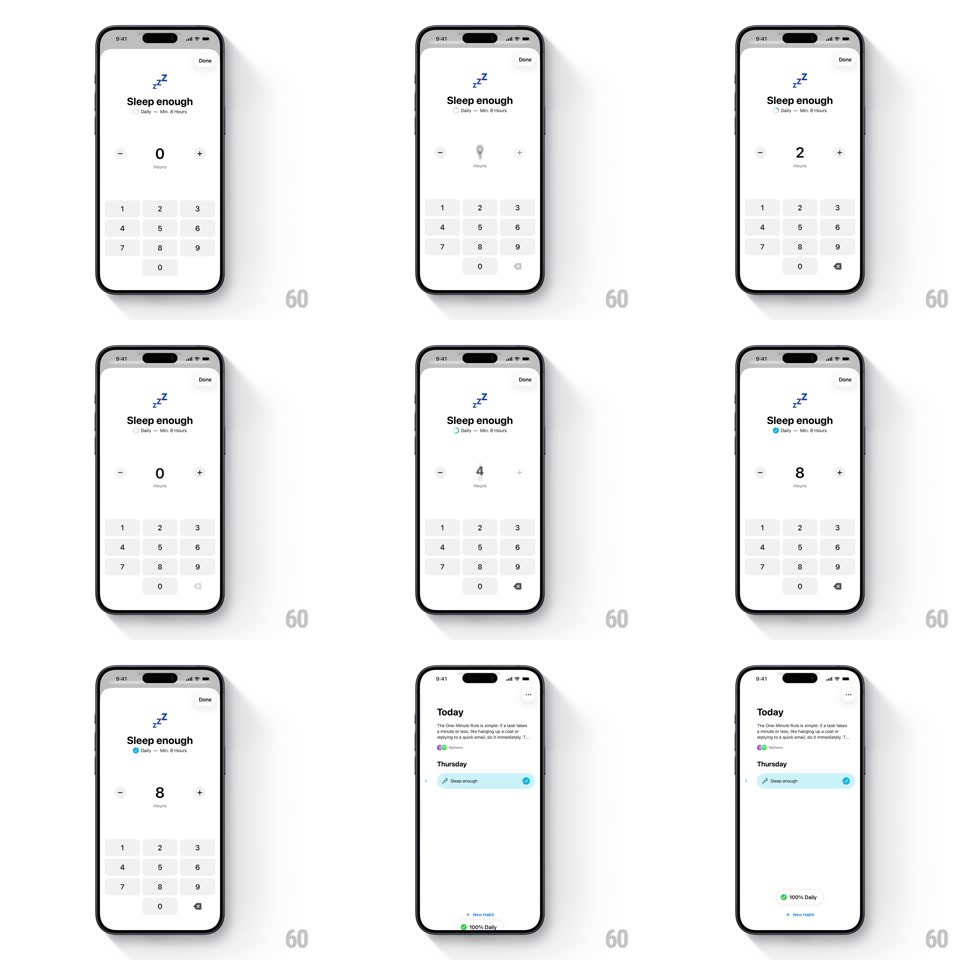

Media
Frame-by-frame

Rebuild this interaction 1:1: Habitastic's sleep counter - tap + or - and the hours digit flips vertically, rolling up for an increment and down for a decrement, like a split-flap counter.

Rebuild this interaction 1:1: Habitastic's sleep counter - tap + or - and the hours digit flips vertically, rolling up for an increment and down for a decrement, like a split-flap counter. ## Integration Integration: stack-agnostic spec - springs given as stiffness/damping, timed motions as duration + curve; map every value to your framework and animation library of choice. ## Scene Habitastic's "Sleep enough" habit sheet: the zZ glyph and habit name with its "Daily - Min 6 hours" meta, a large centered hours number with "Hours" beneath, flanked by round - and + buttons, a numeric keypad (1-9, 0, delete) below, and Done top-right. Entry point: the Today list where the "Sleep enough" row waits to be logged. ## Motion spec Pattern: directional vertical text-flip counter driven by increment/decrement. - Tap + : the current digit slides up and out (translateY -100%, 220ms, ease-in) while the new digit enters from below (translateY 100% -> 0, 220ms, ease-out) - an upward roll. - Tap - : the same flip runs downward - old digit exits down, new enters from above. Direction always matches the change's sign. - Multi-taps chain without stutter: a second tap mid-flip queues, and rapid taps accelerate the flip to ~140ms so the counter keeps up with the finger. - The keypad enters the same value: typing a digit replaces the number with the same vertical roll (direction by comparison - up if larger, down if smaller). - Done dismisses the sheet down (300ms) and the Today row flips to its checked state with a soft fill sweep (250ms). ## Calibration - The flip must be vertical only - no horizontal drift, no scale; it reads as a mechanical odometer. - "Hours" and the +/- buttons never move - only the digit rolls. ## Reduced motion Digits crossfade (150ms) without the roll. ## Don't miss - The keypad and the +/- stepper coexist - both drive the same flipping number. - Zero is a valid value - the counter starts at 0 and rolls up from there.